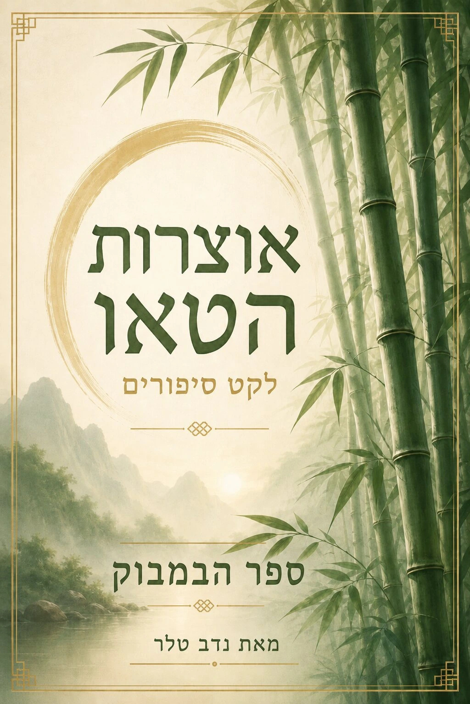
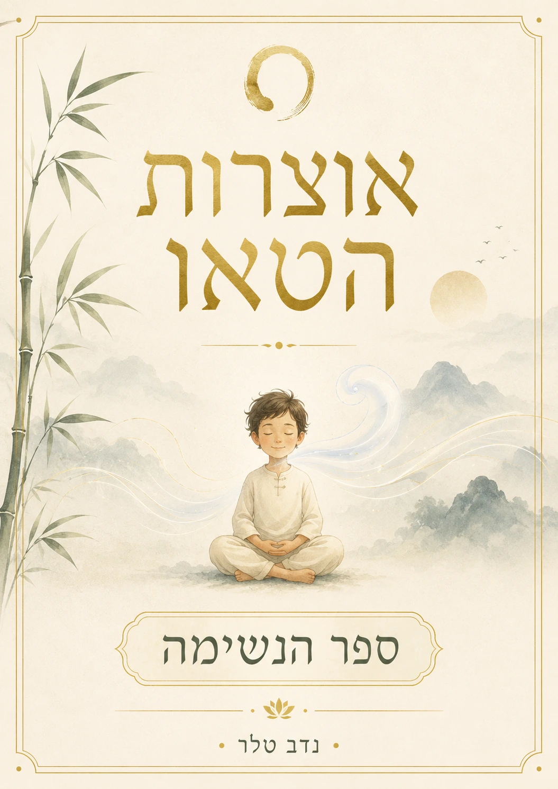
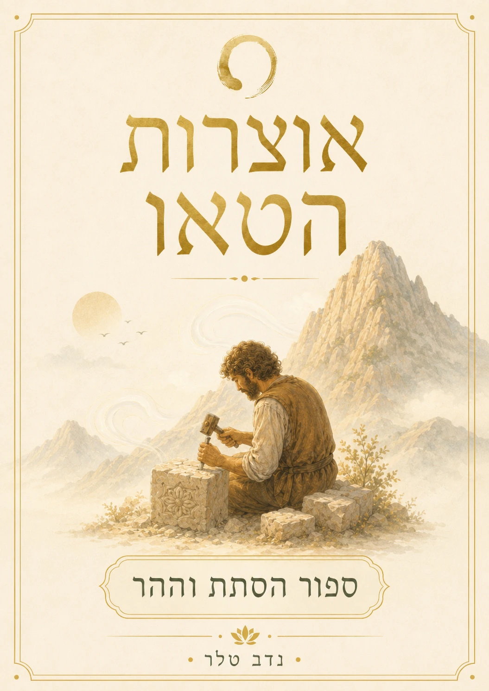

1
להבין את המבנה: תורת המדינה הדואלית
הספר המרכזי למי שרוצה להבין את מודל המדינה: שוק חופשי לצד מסלול אזרחי יציב, בנק דואלי, לולאת הון בלתי נזילה, AI, דיור, עבודה ותעשייה.
עמוד הספרים אינו רק קטלוג. הוא מסלול קריאה: מי שרוצה להבין מדינה מתחיל בתורת המדינה הדואלית; מי שרוצה להתחיל מהאדם מתחיל בספר יסוד; ילדים ומשפחות יכולים להיכנס דרך אוצרות הטאו; ומי שכבר מוכן לעומק פילוסופי מתקדם יכול לעבור אל סולם העדות הציוויליזציונית.


לא חייבים לקרוא הכול. מספיק לזהות באיזה שער אתם נמצאים עכשיו: מדינה, גוף, ילדים, תודעה מתקדמת או חזרה לשיחה עם הבוטים.
הספר המרכזי למי שרוצה להבין את מודל המדינה: שוק חופשי לצד מסלול אזרחי יציב, בנק דואלי, לולאת הון בלתי נזילה, AI, דיור, עבודה ותעשייה.
לפני שמתקנים חברה, בונים אדם יציב יותר. ספר יסוד מחבר גוף, נשימה, הליכה, תנועה, תזונה, שקט ופעולה מתוך עדות.
הדרך הרכה: סיפורים על נשימה, סבלנות, צמיחה, טבע ורדיפה שלא נגמרת. מתאים לילדים, הורים ואנשים שרוצים ללמוד דרך סיפור.
שכבת עומק פילוסופית: לא רק כמה כוח יש לציוויליזציה, אלא איזו תודעה, ריסון ואחריות מחזיקים את הכוח הזה.
אם אתם לא יודעים איזה ספר מתאים לכם, עברו לבוטים. הם יכולים לכוון לפי שאלה, נושא, מצב אישי או תחום עניין.
ארבעה שערים מהירים שמובילים לספר המתאים. זה עוזר למבקר לא ללכת לאיבוד בתוך כל הספרייה.
התחל בתורת המדינה הדואלית, ואחר כך עבור לגרסה האנגלית או למאמרי המודל.
ספר יסוד מתאים למי שרוצה בסיס פשוט: נשימה, יציבה, תנועה, הליכה ונוכחות.
אוצרות הטאו, במבוק, נשימה והסתת וההר — סיפורים רכים על שקט, צמיחה וקבלה.
סולם העדות הציוויליזציונית מיועד למי שרוצה לחשוב על כוח, תודעה, ריסון וציוויליזציה.
אפשר לחפש לפי שם, נושא או ASIN. הקישורים מובילים לאמזון, לעברית כאשר יש קישור ישיר, ולעמודי ההסבר באתר.

A synchronized new political model for the challenges of the 21st century, including Civic Capital Ecosystem, Sovereign Flywheel Theory and Organic State Theory.
מסע פשוט ובהיר אל גוף, נשימה, תנועה ותודעת העד. מתאים לתרגול יומי, יציבה, הליכה, שקט פנימי והתחלה מהבסיס.
מודל פילוסופי המשלים את סולם קרדשב: לא רק כמה כוח יש לציוויליזציה, אלא איזו רמת עדות, ריסון ואחריות מחזיקה את הכוח.
A complementary model to the Kardashev Scale for evaluating the relationship between power, consciousness and non-intervention.
לקט סיפורים לילדים בהשראת הטאו: טבע, נשימה, סבלנות, רכות, תנועה ושקט פנימי בשפה פשוטה ומאוירת.



סיפור טאו לילדים על משמעות החיים, על הרצון להיות משהו אחר, ועל הרדיפה שלעיתים אינה נגמרת עד שחוזרים למהות.
הספרים הם שערי כניסה. הבוטים עוזרים להבין אותם. עמוד המדינה הדואלית נותן את המודל. ומרכבה ישראלית היא השלב הבא למי שכבר עבר תהליך ורוצה לעזור להרכיב את החלקים.